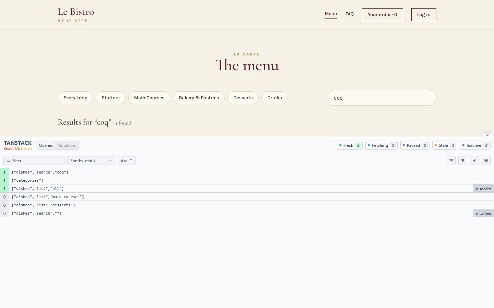
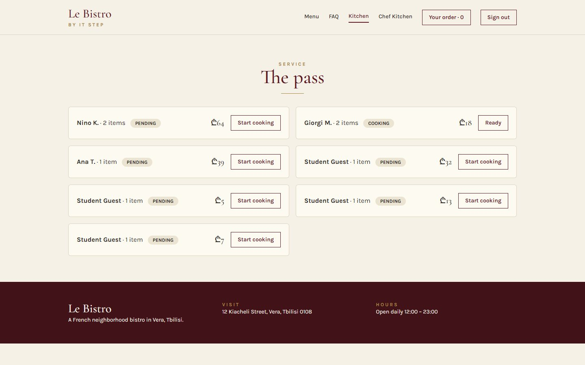
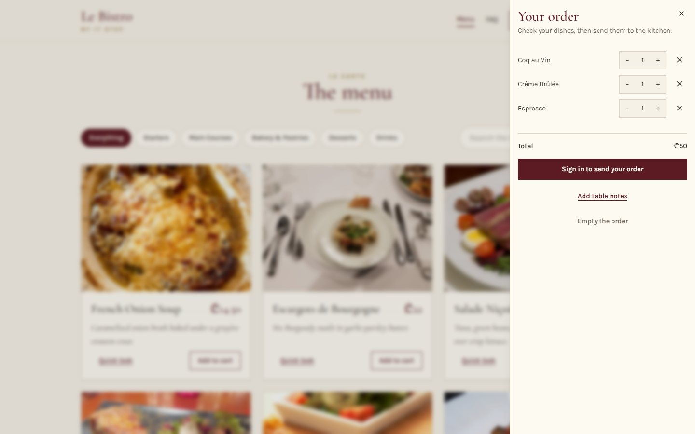

The order slip is the small paper a waiter fills in at the table: how many guests, who cannot eat nuts, what time. The kitchen cannot call back to ask, so the slip must be complete before it leaves the table. A form is a slip that tells you what is missing while the guest is still there.
Theme
React Hook Form, Zod
Le Bistro today
A sign-up and a table slip
Your project
v0.7 · forms with a schema
Length
2 hours · one break
le bon de commande“complete before it leaves the table”
React Hook Form and Zod. A sign-up and a table slip.

L34
Cache
TanStack Query. The menu is fetched once.

L35
Changes
Mutations, optimistic updates, endless lists.

L36
UI
Accessible dialogs and shadcn/ui.
Your projectv0.6 ✓a store, not a providerv0.7 · todayforms with a schemav0.8a cache for the APIv0.9orders and optimistic UIv1.0accessible components
Today's goal Press next to unveil it
The same login form, and half of it is gone
Under the blind: the login page as it is now. Red is what goes, green is what comes.
No useState for the fields, and no onChange
The rules live in one schema, with their messages
Typing does not render the form: 0 renders
The same schema gives the TypeScript type
Apéritif Before we start
Questions from last time?
Zustand, selectors, persist, where state lives.
01
Why does useCartStore() re-render so much?
With no selector it subscribes to the whole store, so any change wakes it. A selector is a question: the component renders only when its answer changes.
02
What does partialize do?
It picks what persist writes to localStorage: the data, not the functions and not the temporary flags.
03
Where does a form's draft live?
Not in the store and not in the URL: it is the third home on the map, "a form". It has its own tool. That is today.
Homework check Two volunteers, two minutes each
Show us your v0.6
Add a product twice, press F5, then open React DevTools with Highlight updates on and add one more. Then open the login page and type your email: does the form flash at every key?
Look for
No Provider left for the cart or the session
One card flashes per click
The cart survives F5; an expired token signs out
The README has the "where does it live?" table
The live Vercel link works
Entrée · Problem 1 Before the new tool
Seventeen letters. Seventeen renders.
You type your email in the login form. How many times does React draw the form while you type?
Problem 1 Type in both forms, or press the button
Type an email, count the renders
A · one useState per fieldvalue={email} onChange={…}
0renders of the form
B · register{...register("email")}
0renders of the form
On the real app: 17 and 0.
17 letters in the email, 17 renders. In dev, StrictMode draws each twice: 34. With register: none.
A · React owns the text
Every letter is a state change, and every state change draws the form again.
B · the browser owns the text
The input keeps what you type. React reads it once, when the guest presses Send.
The price grows with the form
Six fields, an error under each and a list of guests: every key redraws all of it.
Problem 1 The sign-up form, written with what we know
Six fields, written by hand
A state for every valueSix fields, six useState calls.
…and for what we know about themErrors, which fields were touched, and "sending". Three more.
A function that checks everythingEvery rule is code, and every message is a string in it.
Per field: again and againA value, a change, a blur and an error line. Six times.
Problem 1 Your turn
What would we need?
Read a field without a renderThe rules written once, in one placeEvery message next to its fieldKnow: touched? valid? sending?That is a form library
The page · the browser
<input> emailthe browser holds the text
<input> phonethe browser holds the text
<input> passwordthe browser holds the text
useForm()refs · values · errors
Outside the render
Zod schemathe rules
errorsone message per field
onSubmit(values)valid, and typed
all the values
Solution 1 The order slip
The form holds the values
register
Gives each input a name and hands the form a reference to it. The text never has to pass through React.
Typing runs nothing
The browser keeps what the guest types. No state, no render, no onChange of ours.
Send: one question
handleSubmit reads every field once and gives the whole form to the schema.
Two ways out
Wrong: messages next to the fields, and onSubmit never runs. Right: onSubmit gets typed values.
TS2322 · Type 'Resolver<{ email: string; … }>' is not assignable to type 'Resolver<ZodObject<…>>'
useForm<z.infer<typeof schema>>(…): the type of the values, not of the schema
Reading a message that may not exist
{errors.email.message}
TS18048 · 'errors.email' is possibly 'undefined'.
{errors.email?.message}: there is no error until there is one
register without the call
<input {...register} />
No error at all. The field is never registered, so the form says it is invalid however much the guest types.
<input {...register("email")} />: it is a function, call it with the field's name
Quick check Vote, then click
The guest sends the form with a wrong email. Where is it stopped?
B: handleSubmit(onSubmit) is the gate. It asks the schema, and only valid values reach your function. A: onSubmit would run with the wrong email. C: our form has noValidate, which turns the browser's own check off. D: the server still checks, but the guest should never wait for it to learn that an email has no @.
Atelier · Classwork 1 15 minutes, on your own project
Stand up, refill, rest your eyes. After the break: a form that grows, steps, and a question for the server.
Second plat · Problem 2 The easy form is done
One form. Many guests. Three steps.
The table slip has a list that grows, three screens, and a phone number only the server can check. A login was easy. What could go wrong now?
Problem 2 Fill in step 1 and step 2, then press Back
Three steps, and Back loses everything
The review sees nothing.
Each step is a component, and a component's state dies when it leaves the screen.
1 · Fill in step 1 and 2
Four seats, 20:30, a guest with a diet. Press Next each time.
2 · Press Back
Step 1 is a new component: it starts again with the default values.
3 · Read the review
It only knows its own step, so it cannot read the others.
Problem 2 Press the button: the guest types a phone number we already know
Ask the server at every key
Nine digits, nine questions
Every key sends a request, even for "5" and "55".
The answers get mixed up
A slow answer to an old question arrives after a fast one to a new question.
The last one wins
The guest reads an answer for a number they are no longer typing.
Problem 2 Your turn
What would we need now?
Rows that grow and shrinkOne form above the stepsA rule about two fields at onceAsk the server once, at the right timeThe same two tools can do all of it
TableNotesPage
useForm<TableNotes>()shared with <FormProvider>
TableStepseats · arrival
SpecialStepspecial[ ]
ReviewStepnote · reads everything
steps 1 and 3 are not on screen: their values are safe in the form
Solution 2 Steps without props
One form above the steps
The form lives in the page
useForm is called once, in TableNotesPage, and <FormProvider> shares it with everything inside.
No props
Each step calls useFormContext() and gets the same form: the same values, the same errors.
Back is free
A step can leave the screen. Its values stay in the form, because the form is not inside the step.
Second plat · Recipe Three screens, one form
The table notes, in three steps
Say which fields belong to which stepA list of lists. Next will check only the current one.src/pages/TableNotesPage.tsx
One form, one provideruseForm once, <FormProvider {...form}> around the steps.
Next checks this step onlytrigger([...fields]) validates just those fields and says if they are fine.
Different keys for Next and SaveOtherwise React reuses one button and Next sends the form.
Second plat · Recipe Guests with a diet: as many as the table has
useFieldArray: rows that grow and shrink
Ask the form for a listYou get fields (the rows) and the actions append and remove.src/components/notes/SpecialStep.tsx
One row per item, keyed by field.idThe form makes the id. It stays with the row when another row goes.
Register each input by its pathspecial.0.name, special.1.name… and read each message by the same path.
Add and removeA new row starts with empty values. remove(index) takes one away.
Second plat · Recipe When the field is not an input
Controller: connect your own component
Native elements: registerinput, select, textarea, a checkbox. They have a name, a ref and onChange.src/components/notes/TableStep.tsx
Our stepper is a component, not an inputIt takes qty and two buttons' handlers. register has nothing to give it.
Controller hands you fieldfield.value to show, field.onChange(n) to tell the form.
Second plat · Recipe The sign-up's hard rules
Rules between fields, and a question for the server
Fields in one objectThe schema of the whole sign-up. Each rule carries its message.src/schemas/auth.ts
A rule about two fields: refinePut it on the object. path chooses the field that shows the message.
Format first, then the serverThe first refine has abort: true: a wrong format stops here. The second one is async.
One question per numberA Map remembers each answer, so validating again does not ask again.
Solution 2 Switch the three rules on, one by one, and press the button again
Ask the server once, at the right time
Format first
A wrong format never leaves the browser: abort: true.
When the guest is done
Not at every key: mode: "onBlur" asks once, when the field is left.
Never twice
A Map remembers each answer, so the same number is asked once.
Second plat · Recipe A valid form can still be refused
The server has the last word
Send what the form gives youonSubmit gets typed values that already passed the schema.src/pages/RegisterPage.tsx
A refusal that names a field: show it there409 means "this email already has an account": it goes under the email.
Anything else: a message for the whole formsetError("root", …), shown with role="alert" above the button.
localhost:5173/register
Solution 2 Le Bistro, version 0.7
Where everything lives now
State
Home
The login and sign-up fields
React Hook Form (was useState)
Their rules and messages
a Zod schema
The table notes (3 steps)
one form, then the cart store
The cart, the session
stores, saved
Category, search text
the URL
Menu, profile, queue
useApi, until L34
Full code: bistro-track/code/after-L33. Run it with npm install and npm run dev.
The typed text still looks right (the form puts it back). What the row remembers itself does not: an open panel, the focus, an animation jump to the wrong guest.
key={field.id}: it follows the row, not the place
register on your own component
<QuantityStepper {...register("seats")} />
TS2739 · Type '{ onChange: ChangeHandler; onBlur: ChangeHandler; ref: RefCallBack; name: "seats"; … }' is missing the following properties: qty, onDecrease, onIncrease
<Controller … render={({ field }) => …} /> and use field.value, field.onChange
A number field gives text
<input type="number" {...register("seats")} /> with z.number()
Invalid input: expected number, received string. An empty field with valueAsNumber gives: expected number, received NaN.
register("seats", { valueAsNumber: true }), or a Controller with real numbers
No error: Next sends the form. React keeps one button and turns it into a submit button during the click.
<button key="next" …> and <button key="save" …>
Quick check Vote, then click
Which of these needs a Controller?
B: the stepper is a component, not an input: it has no name, ref or onChange that match, so Controller connects it. A, C and D are native elements: register works on them. The same goes for a date picker or Radix's Select from L36: components get a Controller.
Atelier · Classwork 2 · with AI 15 minutes, on your own project
Prompt it: a form in steps
The taskthe AI writes, you check
BaseA checkout in three steps (contact, delivery, review) with a single useForm above the steps, a Zod schema and trigger on Next.
PlusA list of gift notes (useFieldArray) and a stepper with Controller.
ProA sign-up with a refine for the matching passwords and an async username check that skips the server on a wrong format.
Your prompt, in five parts (CRAFT)
C
ContextYour shop and stack, with the versions: react-hook-form 7, zod 4, resolvers 5. Paste types.ts and your cart store.
R
Role"A React teacher who writes small forms for a beginner."
A
ActionThe Base task. Plus and Pro in follow-up prompts.
F
Format"Only the files that change, complete, with paths."
T
Target"No useState for field values. The schema holds every rule and message."
Done when
One useForm, above the steps; no useState for values
Next validates only its own step
Zod 4 syntax: z.email(), error:
AI.md: your prompt and one thing you changed
A sample prompt · Tech store
CONTEXT
Shop "Volt" (phones, laptops). Vite + React 19 + TypeScript
+ Tailwind 4, react-hook-form 7, zod 4 (z.email(), error:),
@hookform/resolvers 5. Cart in a Zustand store (pasted).
ROLE
A React teacher who writes small forms for a beginner.
ACTION
A 3-step Checkout page: contact, delivery + a list of gift
notes (name, message; add and remove), review. Save in
the cart store.
FORMAT
Only changed files, complete, with paths.
TARGET
One useForm above the steps, no useState for fields.
Masterclass · LAB-33 Press next: the prompt opens part by part
Le Bistro so far, in one prompt
Prompt · LAB-33 · Le Bistro after L33
C
Contextwhat exists and what we use
Le Bistro, a French restaurant site. Vite + React 19 + TypeScript + Tailwind CSS 4,
react-router 8 (import from "react-router"), Zustand 5, react-hook-form 7, zod 4
(z.email(), the option is error), @hookform/resolvers 5. API at /api through a Vite
proxy: dishes, categories, search, /auth/login, /auth/register, /auth/me, and
/enterprise/validation/check-phone?number= -> { isDuplicate } (1 second; 555123456 is taken).
R
Rolewho answers
You are a senior React developer who writes code for beginners to read.
A
Actionwhat to build, step by step
Build the site as it is so far (menu, search, pages, Zustand stores, role guards) and its
forms with React Hook Form and Zod, with no useState for field values:
- schemas/auth.ts: loginSchema, and registerSchema (name, email, Georgian mobile phone,
password with a digit, confirm with refine + path, terms). The phone rule has abort:
true, then an async check-phone call whose answers are remembered.
- TextField (label, input, message slot of fixed height), LoginPage and RegisterPage:
useForm + zodResolver, sign-up on mode onBlur, server errors with setError.
- /notes: 3 steps in ONE form (FormProvider, trigger per step): seats (Controller + stepper),
arrival time, guests (useFieldArray, key = field.id), a note; saved in the cart store.
F
Formatwhat the answer looks like
First a table: each form, its fields and the rule that guards each. Then every file in
full with its path. Each schema exports its z.infer type.
T
Targetwho reads it, when it's done
Beginners will read it: small components, messages live in the schemas, App.tsx only
lists routes. It must pass npm run build.
Masterclass · LAB-33 The AI writes fast. You decide if it's right.
Run it, then check it
Copy the prompt into an AI toolClaude, ChatGPT, Copilot Chat: any of them. Nothing to attach: the API is named in the prompt
Build what it gives backa new Vite project, every file at its path, plus npm install zustand react-hook-form zod @hookform/resolvers@5
Runnpm run dev and npm run buildan error message goes straight back into the chat
Compare with code/after-L33the version we built by hand
Check it with what you learned today
No useState holds a field's value: register or Controller does
Every useForm is typed with z.infer, with zodResolver(schema) as its resolver
Zod 4 syntax: z.email() and error:, no required_error
One useForm above the steps; guest rows use key={field.id}; Next and Save have different keys
The phone rule has abort: true before the server call
AIs write a useState for every field "to be safe" and one useForm per step. Today you can say why not.
Masterclass · LAB-33 The same five parts, without the labels
The short version
Prompt · LAB-33 · the short version
You're a senior React developer writing for beginners.Le Bistro is a Vite + React 19 + TypeScript + Tailwind 4 app with react-router 8, Zustand 5, react-hook-form 7, zod 4 and @hookform/resolvers 5, and an API at /api through a Vite proxy (login, register, /auth/me, and a check-phone endpoint that takes a second and says 555123456 is taken).Build the site as it is so far (menu, search, pages, a cart and a session in Zustand stores, role guards) and its forms: a schemas/auth.ts with loginSchema and a registerSchema (name, email, Georgian mobile phone with abort: true before an async, remembered server check, password with a digit, a refine with path for the matching passwords, terms), a TextField with a fixed-height message slot, a LoginPage and a RegisterPage on useForm + zodResolver (the sign-up on mode onBlur, server errors with setError), and a /notes page with three steps in one form (FormProvider, trigger per step): seats with Controller, arrival time, guests with useFieldArray keyed by field.id, a free note, saved in the cart store; no useState for field values.Answer with a table of each form, its fields and the rules that guard them, then every file in full with its path.Keep it simple for beginners, put every message in the schemas, and make sure npm run build passes.
ContextRoleActionFormatTarget
How CRAFT works
The five parts are a checklist for your thinking, not a form to fill in. Once all five are there, the labels can go.
Dessert What we solved today
Two problems, two answers
Problem 1
Seventeen letters, seventeen renders, and the same three lines six times.
A schema and a form
register keeps the text in the input (0 renders). One Zod schema holds the rules, the messages and the type. handleSubmit is the gate.
Problem 2
A list that grows, steps that forget, a server question asked at every key.
One form, bigger tools
useFieldArray and Controller; one FormProvider above the steps with trigger; refine, abort and a cache for the server.
Dessert Click a card to check yourself
What does this do?
01
01
Makes the form object. The type comes from the schema, and Zod judges the values.
02
02
Gives the input a name and a ref. The browser keeps the text, so typing renders nothing.
03
03
The gate: it asks the schema first. Only valid values reach onSubmit.
04
04
Puts a message on the whole form, for what only the server can know.
05
05
A list of fields that can grow and shrink. Key each row with field.id.
06
06
Checks only these fields: Next validates its own step, not the whole form.
Homework Before L34
Your shop, version 0.7
Live link required
Baserequired
Forms with a schema
A schemas/ folder: the login and a sign-up (name, username, email, password, repeat it).
useForm + zodResolver, messages in the schemas, types from z.infer.
No useState holds a field's value.
A refine with path for the matching passwords; the server's answer with setError.
Plusrecommended
A form in steps
A checkout in three steps: one form above them, trigger per step, a useFieldArray list, a Controller field.
Profast finishers
Ask the server, once
"Is this username taken?" with abort and a cache, on mode: "onTouched".
Before you submit
React DevTools: typing does not flash the form
Search for useState in the form files: none for values
The messages come from the schema
npm run build passes, the Vercel link works
Full brief and grading: homework.md.
L33 Le bon de commande
Merci!
Questions now, or in the class chat. See you at L34.
Next time · L34
The menu, loaded three times.
Open Le Bistro, click a dish, go back, open the menu again. The same dishes crossed the network three times, and the main courses take three seconds each time. Watch the Network tab with a stopwatch. We'll give the server's data a cache.